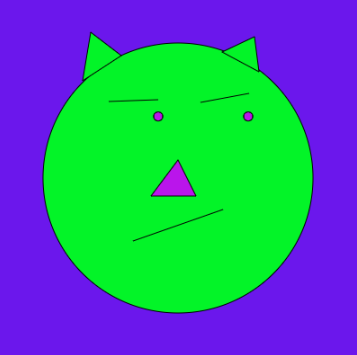
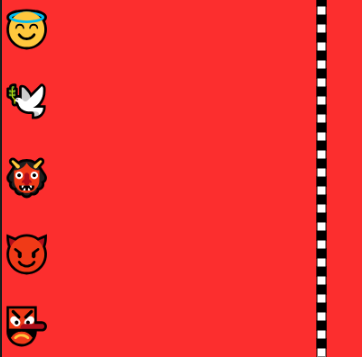

Meus projetos

Monalisa
Um rosto estilizado com mini chifres e a pele verde clara, o projeto foi desenhado em p5.js, cujo a pupíla se mexe de acordo com o ponteiro do mouse.

Corrida dos Anjos vs Demônios
Um jogo de corrida feito com p5.js onde 2 anjos e 3 demônios, controlados pelas teclas: ( A, S, J, K, L ), competem para ver quem chega primeiro à linha de chegada.

Quente e frio
Um jogo simples desenvolvido com p5.js, em que o jogador deve localizar um ponto escondido movendo o mouse. Ao se aproximar o bastante, o jogo sinaliza que o ponto foi encontrado.